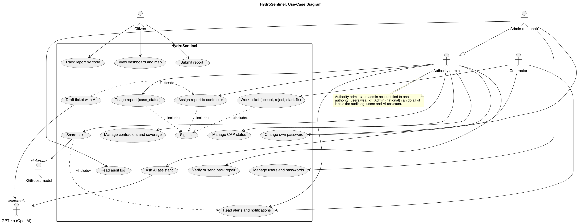
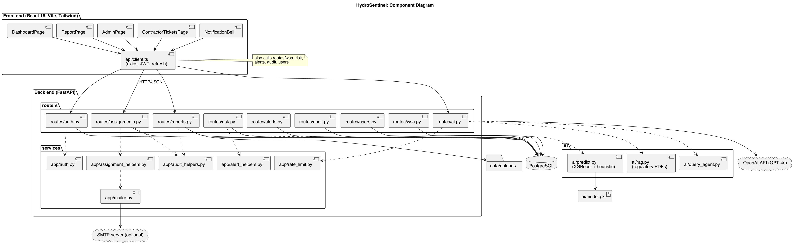

Q3.2 Classes
The data, drawn from the code.

HydroSentinel6
Audit data sits in long PDFs. Residents have no simple way to report a fault and follow it up. Authorities hire contractors but have no one view of who is fixing what.
Residents · authority and national admins · repair contractors.
One system from report to verified repair, with AI that rates risk and drafts work, and a person who always decides.




| Check | Result |
|---|---|
| Names on diagrams exist in the code (routes, files, classes) | 60 checked, 0 mismatches |
Class diagram generated from models.py | cannot drift |
| Ticket kept in its own table, not a new case status | Deviation: tracker and CSV keep working |
| Switch-off stops new tickets only | Deviation: found in review, stranded repairs |
| One open ticket per report, enforced by PostgreSQL | Added after the design |
| Level | Passed | Failed | Unresolved |
|---|---|---|---|
| Backend (pytest) | 279 | 0 | 0 |
| Frontend (Vitest) | 109 | 0 | 0 |
| End-to-end on the live system | 27 of 27 | 0 | 0 |
| User acceptance (3 testers, 4 tasks) | __ of 12 | __ | __ |
Not covered by automation: a real mail server, and the browser screens (checked by hand and by the testers).
A report no longer vanishes: it becomes a ticket with an owner, a due time and a check.
The public tracker hides location and photos. A contractor sees them only for its own ticket (others return 404).
AI only drafts. Photos go to OpenAI only on request. A person confirms every assignment and every repair.
Model accuracy rests on 29 held-out authorities.One authority moves it 3.4 points. Cross-validation is shown next to it.
Scoring is manual; the AI limit lives in one process; email never tested on a real server.FR-09, FR-10 and FR-15 stay open.
Next: scheduled re-scoring, then citizen notices when a ticket is verified.Both build on the existing alert and notification tables.
Defined the problem and requirements, chose the architecture, designed the ticket rules, directed and reviewed AI-assisted code, ran the tests and the user sessions.
Check the real data first (NRW was empty for all 169 authorities). Enforce the rules that matter on the server, not only in the screen.
A person always decides. A contractor can mark fixed; only the authority can verify and resolve.